12/5 - 12/6
金沢区ハッカソン＠八景島客船ターミナルレポート
12/5 - 12/6
金沢区ハッカソン＠八景島客船ターミナルレポート
12/5（土）
12月5日（土）〜12月6日（日）にかけて横浜金沢区大会が八景島客船ターミナルで開催されました。
海を望む開放的なロケーションと晴天にも恵まれ、和やかの雰囲気の中約20名の方々が参加しました。
初日は開会の挨拶の後、株式会社パスコ、インフォ・ラウンジ、Tangerine等企業の方々に事例紹介、提供APIの紹介、ビーコン活用のヒントなどの話題が提供されました。
その後、Code for YOKOHAMAの下山さんのファシリテーションによるワークショップ、チームビルディングが行われ、全４チームに別れて開発がスタートしました。
ランチタイムには休日の八景島を満喫。各自それぞれレストランでの食事やソフトクリームなどを楽しみました。
金沢区役所 出丸係長の挨拶
簡単なワークショップとチームビルディング

Tangerine汲田さんによるビーコン活用のヒント
インフォ・ラウンジ肥田野さんによる金澤写真アルバムの紹介
Code for YOKOAHAMA小林さんによる金沢区オープンデータの紹介

ランチタイム休憩
オープンデータソフトクリーム
アイディアを詰めて行きます
金沢区の中村課長と出丸係長
12/6（日）
二日目は各チームによる進捗報告からスタートしました。
さらに、あらたな参加者も合流。最終プレゼンに向けて準備を進めました。
結果、各4チーム＋Code for YOKOHAMA下山さんによる飛び込みプレゼンの合計5つの成果がプレゼンされました。
二日目は初日の進捗をシェアしてスタート
新たな参加者も加わって開発を再開
下山さんや参加者が全国で食べ歩いたソフトクリームの写真や説明などの情報をオープンデータ化。地図上で表示したり、位置情報から近辺で食べられるソフトクリームの情報がプッシュ式で送付される。
二日目もオープンデータソフトクリーム
オープンデータとbeaconを活用しアプリに盛込むことで、近くにいる人を把握してつながれるようにするサービス。
具体的には、
①友達ゲッター（ビーコンエリアに入った人同志がつながる）
②ポイントゲッター（エリア内でポイント）
③健康ゲッター（ウォーキングをサポート）
④クーポンゲッター（エリア内でクーポン）
の機能がある。
ビジネスモデルは、お店・利用者・役所の３者の間でお金の流れを作る広告収入を想定。
ご近所付き合い、運動不足を歩くことにより解決、近隣施設 課題をフレンドゲッターが広まることで近所の会話増え、友好の輪、歩くことで未病を対策。ターゲットは、高齢者や若者など幅広く想定。
専門学校生が主体となったチーム「フレンドゲッター」の最終プレゼン
オープンデータとbeaconを活用し地域における災害時の避難ルート、安否情報を必要とする人や、介護などを必要とする、疾病のある高齢者や妊婦など「困っている人」の生命リスク時に助けを受けるのに必要な情報を届けるシステム。（例：倒れた高齢者の位置情報がサーバーに行く→サーバーから近くの人の携帯電話に通知が行く→本人が自分も名前も言えない状況でもあらかじめ登録している緊急連絡先に助けを求められる）
女性二人がリードしたチーム「そうかも」の最終プレゼン
三浦半島の地理条件の悪さなどの課題に対して、解決を探るアプリ。デモでは、三浦半島でルーレット、三浦半島ピンボールゲーム。
中山さんの最終プレゼン
まさに、半島ハック！三浦半島がピンボールに！
「オープンデータ」×「カセキホリダー」×「Ingress」×「遺跡から学ぶ」から、横浜の史跡がマップ上で一目で認識できる。ひいては、地域活性を目指すアプリ。Google Mapと連携し経路検索やスタンプラリー（行った遺跡のスタンプが入手できる）などの機能がある。地元の人がターゲット。
遺跡の情報をオープンデータ化チーム「イセキホリダー」のプレゼン
夫婦で寸劇も！
審査員のみなさんによる厳正な審査の結果、最優秀賞はチーム「そうかも」、優秀賞はチーム「イセキホリダー」にそれぞれ決定しました。
チーム「イセキホリダー」のみなさん。おめでとうございます！
チーム「そうかも」のみなさん。おめでとうございます！
金沢区地域力推進担当中村課長は、「エンジニアも非エンジニアも多様な参加者によるチームによるコラボレーションの機会が提供でき、すばらしい作品が出そろった。」と講評されました。
地域力推進担当中村課長
みなさんお疲れさまでした！